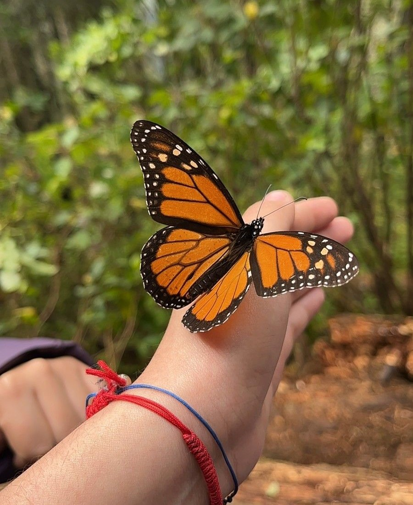

Animales en peligro
DE
Extincion
date
Causas de que los animales esten en peligro de extincion
Existen múltiples causas por las que una especie puede llegar a encontrarse al borde de la extinción. Las razones pueden resultar tremendamente particulares para cada especie, pero en líneas generales, entre las mayores amenazas se encuentra la destrucción y fragmentación de sus hábitats; el cambio climático; la caza y tráfico ilegal; y la introducción de especies exóticas.
¿Como evitar la extincion de especies?
Conseguir que una especie deje de estar en peligro de extinción no es una tarea fácil. Evitar que una especie desaparezca implica la puesta en marcha de una gran cantidad de recursos y acciones concretas. Algunas de ellas serían evitar la fragmentación de sus hábitats, por ejemplo la deforestación; perseguir y castigar con dureza la caza ilegal y el tráfico de especies; la creación de reservas naturales; o el fomento de programas de reproducción, reintroducción y de mejora genética. La lucha contra la contaminación y el cambio climático también es la lucha por la conservación de muchos animales. Cada decisión personal tiene una consecuencia a nivel global en múltiples aspectos, de ahí la importancia de la concienciación social de la población para luchar contra la pérdida de biodiversidad.
Mariposa Monarca
Las mariposas monarca (Danaus plexippus) son mundialmente conocidas por la increíble migración masiva que lleva a millones de ejemplares a California y México cada invierno. La monarca norteamericana es la única mariposa que realiza una travesía tan espectacular, con una distancia cercana a los 5000 kilómetros. Estos insectos deben partir cada otoño antes de que llegue el frío, que acabaría con ellos si se demoran demasiado.
Las mariposas monarca de América del Norte, que ya no se encuentran en América del Sur, se dividen en dos grupos principales: las monarcas occidentales, que se reproducen al oeste de las Montañas Rocosas y pasan el invierno en el sur de California; y las monarcas orientales, que se reproducen en las Grandes Llanuras y Canadá, y pasan el invierno en el centro de México. También hay poblaciones en Hawái; Portugal y España; y Australia, Nueva Zelanda y otras partes de Oceanía.
Lince Iberico
El lince ibérico es un felino de tamaño mucho mayor que un gato doméstico. Se caracteriza por su aspecto robusto, sus patas largas y su cola corta con una borla negra en el extremo y que suele mantener erguida batiéndola en momentos de peligro o excitación.
Sus orejas están rematadas por unos característicos pinceles compuestos por pelos negros rígidos cuya finalidad posiblemente sea la de descomponer la redonda silueta de su cabeza, favoreciendo de este modo su mimetismo.
También son características las patillas que cuelgan de sus mejillas y que aumentan progresivamente de tamaño con la edad. Los jóvenes de pocas semanas carecen de patillas y casi de pinceles y en los individuos de un año ya aparecen las patillas, aunque cortas, que apenas cuelgan por debajo de la barbilla. Los machos tienen las patillas más largas que las hembras.
Lemur
En lo alto de las copas de los árboles de las selvas orientales de Madagascar viven dos especies de lémur rufo en peligro crítico de extinción, unas de las más famosas entre la fauna isleña. Sin embargo, nuevos modelos del cambio climático y la pérdida de selva lluviosa sugieren un futuro aún más sombrío para los primates: su hábitat podría desaparecer por completo para 2080.
Al igual que la mayoría de las plantas y animales de Madagascar, los lémures rufos blancos y negros y los lémures rufos rojos solo viven en esta nación del océano Índico y figuran entre las 96 de las 101 especies de lémures del país consideradas en peligro de extinción.
Angeles de mar
Los mares albergan a las criaturas más enigmáticas, variadas y especiales del mundo animal. Al ser un lugar desconocido para nosotros, hay cientos de especies que escapan de nuestro saber. Entre ellas se encuentran los ángeles de mar (Clionidae) que hacen alusión a su etérea composición corporal y a su forma de locomoción.
Si todavía no conoces sobre estos animales, te invitamos a seguir leyendo este artículo de EcologíaVerde donde te platicamos sobre las características de los ángeles de mar, su hábitat y alimentación, además de que también abordaremos por qué los ángeles de mar están en peligro de extinción.